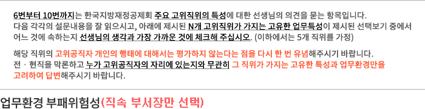

설문진행률9%


(재량의 정도) 업무를 수행하는 과정에서 아래에 제시된 평가대상 직위가 가지는 재량이
얼마나 크다고 생각하십니까?
| 평가대상 직위 | 재량이 전혀 없다 |
재량이 거의 없다 |
재량이 별로 없다 |
보통 | 재량이 약간 많다 |
재량이 상당히 많다 |
재량이 매우 많다 |
모름 |
|---|---|---|---|---|---|---|---|---|
| 경영혁신본부 본부장 | ||||||||
| 공제사업본부 본부장 | ||||||||
| 지방회계통계본부 본부장 | ||||||||
| 지방투자분석센터 소장 | ||||||||
| 한국옥외광고센터 센터장 |
(업무관련 정보의 중요도) 아래에 제시된 평가대상 직위에서 알게 되는 정보가 사적인 목적으로
이용될 경우, 고위공직자 자신 또는 제3자가 그것으로 인해 이익(또는 손해)을 볼 가능성이
얼마나 높다고 생각하십니까?
| 평가대상 직위 | 이익‧손해 가능성이 전혀 없다 |
이익‧손해 가능성이 거의 없다 |
이익‧손해 가능성이 별로 없다 |
보통 | 이익‧손해 가능성이 약간 높다 |
이익‧손해 가능성이 상당히 높다 |
이익‧손해 가능성이 매우 높다 |
모름 |
|---|---|---|---|---|---|---|---|---|
| 경영혁신본부 본부장 | ||||||||
| 공제사업본부 본부장 | ||||||||
| 지방회계통계본부 본부장 | ||||||||
| 지방투자분석센터 소장 | ||||||||
| 한국옥외광고센터 센터장 |
(이해관계자 위험성) 업무수행 과정에서 자주 만나게 되는 이해관계자의 직업, 경제수준, 사회적
지위 및 영향력 등을 고려했을 때, 아래에 제시된 평가대상 직위가 부패행위에 노출될 가능성이
얼마나 높다고 생각하십니까?
| 평가대상 직위 | 부패행위노출 가능성이 전혀 없다 |
부패행위노출 가능성이 거의 없다 |
부패행위노출 가능성이 별로 없다 |
보통 | 부패행위노출 가능성이 약간 높다 |
부패행위노출 가능성이 상당히 높다 |
부패행위노출 가능성이 매우 높다 |
모름 |
|---|---|---|---|---|---|---|---|---|
| 경영혁신본부 본부장 | ||||||||
| 공제사업본부 본부장 | ||||||||
| 지방회계통계본부 본부장 | ||||||||
| 지방투자분석센터 소장 | ||||||||
| 한국옥외광고센터 센터장 |
(퇴직자 재취업) 아래에 제시된 평가대상 직위에 있었다는 사실이 업무 관련 공공기관이나
민간기업에 재취업하는데 얼마나 도움이 된다고 생각하십니까?
| 평가대상 직위 | 전혀 도움이 안된다 |
거의 도움이 안된다 |
별로 도움이 안된다 |
보통 | 약간 도움이 된다 |
상당히 도움이 된다 |
매우 도움이 된다 |
모름 |
|---|---|---|---|---|---|---|---|---|
| 경영혁신본부 본부장 | ||||||||
| 공제사업본부 본부장 | ||||||||
| 지방회계통계본부 본부장 | ||||||||
| 지방투자분석센터 소장 | ||||||||
| 한국옥외광고센터 센터장 |